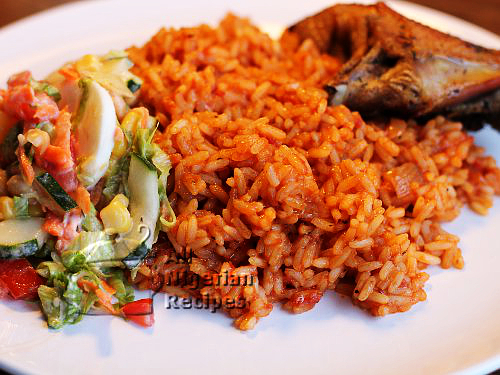

Jollof Rice

Description
The Nigerian rice recipe discussed here is the classic Nigerian Jollof Rice prepared at parties. This is the most popular Nigerian rice recipe. This is why you will always see it in parties. It is quite easy to prepare if you follow the simple steps.
Ingredients
- 3¾ cups (750g) long grain parboiled rice
- 2-3 cups Tomato Stew
- Chicken (whole chicken, drumsticks or chicken breast)
- Pepper and salt (to taste)
- 2 medium onions
- 3 Knorr cubes
- 2 teaspoons thyme
- 2 teaspoons curry powder (Nigerian curry powder)
Steps
- Prepare the tomato stew. It is advisable to prepare tomato stew before hand and keep in the freezer. This is so that whenever you want to cook any jollof rice related dish, it is just a matter of adding it to your cooking.
- If you will use whole chicken then wash and cut it into pieces. Cook with the thyme, Knorr cubes and 2 bulbs of onions (chopped). The cooking time depends on the type of chicken. The rooster or cockerel cooks much faster than the hen but the hen is definitely tastier. When done, grill it in an oven. You may also fry it. This is to give it a golden look which is more presentable especially if you have guests for dinner.
- Parboil the rice. Rinse the parboiled rice and put in a sieve to drain
- Pour the chicken stock and the tomato stew into a sizeable pot and leave to boil.
- Add the drained parboiled rice, curry powder, salt and pepper to taste. The water level should be the same level of the rice. This is to ensure that all the water dries up by the time the rice is cooked.
- Cover the pot and leave to cook on low to medium heat. This way the rice does not burn before the water dries up.